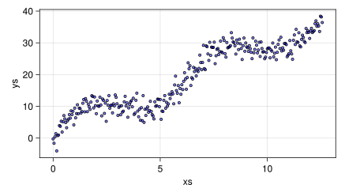
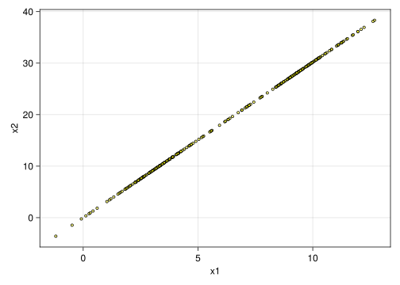

using CSV,DataFrames,Tidier,Pipe
using CairoMakie,AlgebraOfGraphics
using Random,Distributions
dist=Normal()
Random.seed!(34343)TaskLocalRNG()我们通过一个简单实例来直观介绍一下主成分分析(PCA).主成分分析对高维数据分析非常有用, 不失一般性, 在二维数据上仍然可以工作. 在数学中,最基本的方法是度量, 例如度量人的身高. 度量身高时我们需要一个工具, 直尺,卷尺,甚至是一根树枝都可以作为度量工具. 如果要度量两个属性, 例如同时度量身高和体重, 我们还需要一个称量工具. 对于二维数据,度量不同属性的工具本不能交叉使用. 在大多数情况下,属性都不可或缺,但是在有些特殊情况下, 有些属性就显得不那么重要. 例如有一条公路, 度量公路的属性有长度和宽度. 但是当我们在地图上观察公路的时候, 发现道路的宽度经常没有,出现的只是长度曲线. 所以在地图应用中, 道路的宽度信息不那么重要,在地图中, 很容易观察到长度信息比宽度信息重要. 从数值上看, 长度的跨度比宽度跨度大. 因此我们可以舍去宽度信息. 主成分分析实际就是上面这段直观解释的算法实现.
Let’s take a brief example to visualize Principal Component Analysis (PCA), which is very useful for high-dimensional data analysis, without losing generality, and can still work on two-dimensional data. In mathematics, the most basic method is to measure, for example to measure a person’s height. We need a tool when measuring height, a ruler, a tape measure and even a branch can be used as a measurement tool. If we want to measure two attributes, such as measuring height and weight at the same time, we also need a weighing tool. For 2D data, tools to measure different properties cannot be used interchangeably. In most cases, attributes are indispensable, but in some special cases, some attributes are less important. For example, if there is a highway, the properties of the highway are measured by length and width. But when we look at the road on the map, we often don’t have the width of the road, but only the length curve. So in the map application, the width information of the road is not so important, and in the map, it is easy to observe that the length information is more important than the width information. Numerically, the span of the length is larger than the span of the width. So we can discard the width information. Principal component analysis is actually the algorithm implementation of the above intuitive explanation.
using CSV,DataFrames,Tidier,Pipe
using CairoMakie,AlgebraOfGraphics
using Random,Distributions
dist=Normal()
Random.seed!(34343)TaskLocalRNG()| Row | xs | ys |
|---|---|---|
| Float64 | Float64 | |
| 1 | 0.0 | -0.272431 |
| 2 | 0.042028 | -1.63477 |
| 3 | 0.084056 | 0.367143 |
| 4 | 0.126084 | 1.39357 |
| 5 | 0.168112 | -4.05051 |
| 6 | 0.21014 | 0.794208 |
| 7 | 0.252168 | 0.94975 |
| 8 | 0.294196 | 3.93994 |
| 9 | 0.336224 | 3.71181 |
| 10 | 0.378252 | 5.31367 |
| 11 | 0.42028 | 1.89908 |
| 12 | 0.462308 | 5.11653 |
| 13 | 0.504336 | 7.07824 |
| ⋮ | ⋮ | ⋮ |
| 289 | 12.1041 | 33.2352 |
| 290 | 12.1461 | 33.5851 |
| 291 | 12.1881 | 33.8266 |
| 292 | 12.2301 | 36.0369 |
| 293 | 12.2722 | 36.9264 |
| 294 | 12.3142 | 35.2095 |
| 295 | 12.3562 | 36.0006 |
| 296 | 12.3983 | 35.3022 |
| 297 | 12.4403 | 33.5829 |
| 298 | 12.4823 | 38.3843 |
| 299 | 12.5243 | 38.147 |
| 300 | 12.5664 | 36.3962 |
ax=(width=500,height=250)
dlayer=data(df)
mlayer=mapping(:xs,:ys)
vlayer=visual(Scatter,markersize=6, color=(:blue,0.5),strokewidth=1,strokecolor=:black)
plt1=dlayer*mlayer*vlayer
draw(plt1,axis=ax)
对于二维数据, 理论上可以占满坐标系中所有的位置,但是实际的数据可能只出现在有限的位置, 我们可以说真实的数据是嵌入在二维空间中的
For two-dimensional data, theoretically all positions in the coordinate system can be filled, but the actual data may only appear in a limited number of positions, and we can say that the real data is embedded in the two-dimensional space
2×300 transpose(::Matrix{Float64}) with eltype Float64:
0.0 0.042028 0.084056 … 12.4403 12.4823 12.5243 12.5664
-0.272431 -1.63477 0.367143 33.5829 38.3843 38.147 36.3962using LinearAlgebra
function svd_block(A::Matrix)
U,Σ,V=svd(A)
return (i)->U[:,i]*Σ[i]*V[:,i]'
end
d=@pipe df|>Matrix|>svd_block
df2=@pipe d(1)|>DataFrame(_,:auto)
dlayer2=data(df2)
mlayer2=mapping(:x1,:x2)
plt2=dlayer2*mlayer2*visual(Scatter,markersize=6, color=(:yellow,0.5),strokewidth=1,strokecolor=:black)
draw(plt2)